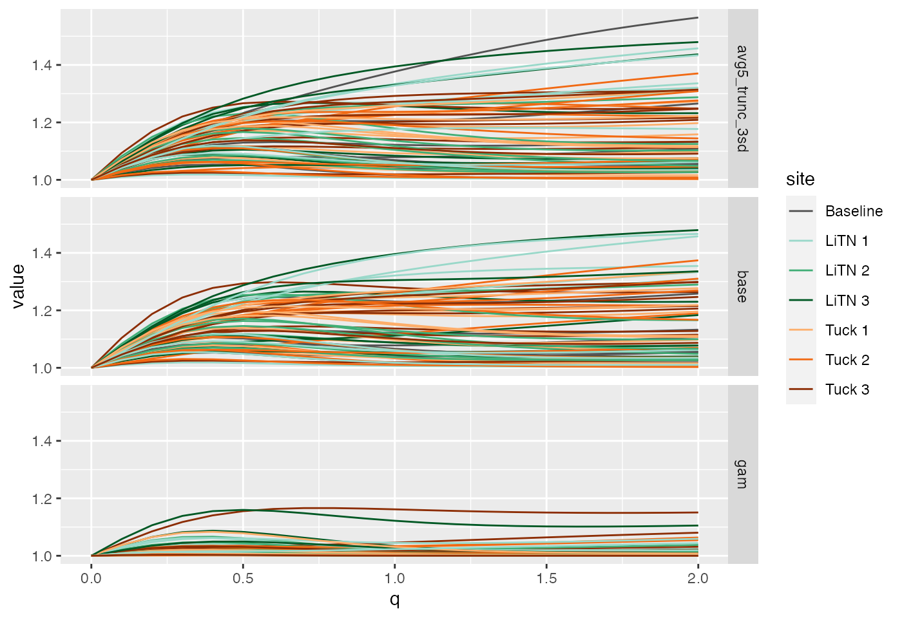
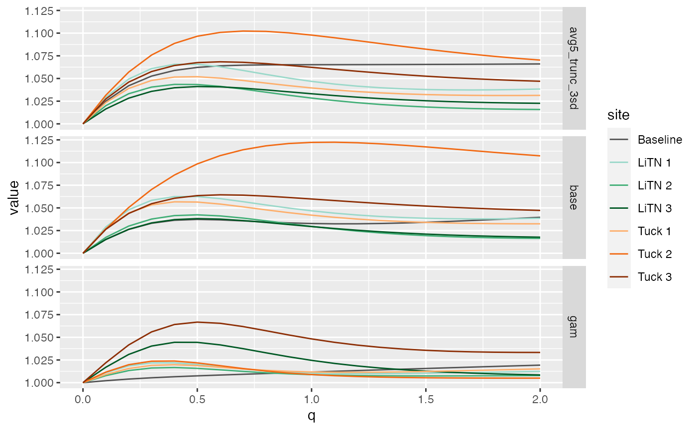
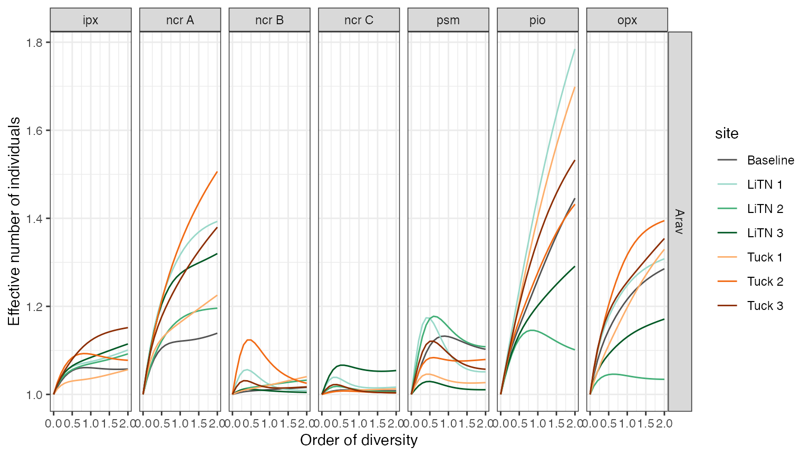

diversity.Rmd
library(elktoeChemistry)
#> Loading required package: dplyr
#>
#> Attaching package: 'dplyr'
#> The following objects are masked from 'package:stats':
#>
#> filter, lag
#> The following objects are masked from 'package:base':
#>
#> intersect, setdiff, setequal, union
#> Loading required package: ggplot2
library(dplyr)
library(entropart)
library(ggplot2)
analysis_data <- readRDS(params$inputs$analysis)
dt <-
analysis_data(
contrast = "all",
test_data_FUN = identity,
transect_opts = list(
.layers = c("ipx", "ncr", "psm", "pio", "opx")
)
) %>%
select(signal, species, element, data) %>%
tidyr::unnest(cols = data) %>%
select(
signal, species, final_status, river, site,
id, obs, transect, layer, annuli, element, value) %>%
group_by(
signal, species, final_status, river, site,
id, layer, annuli, element,
) %>%
summarise(
value = sum(value)
)
#> `summarise()` regrouping output by 'signal', 'species', 'final_status', 'river', 'site', 'id', 'layer', 'annuli' (override with `.groups` argument)
adt <-
dt %>%
ungroup() %>%
mutate(
layer_annuli = if_else(is.na(annuli),
as.character(layer),
paste(layer, annuli)),
layer_annuli = factor(layer_annuli,
levels = c("ipx", paste("ncr", LETTERS[1:13]),
"psm", "pio", "opx")),
) %>%
select(
signal, species, site, id, layer, annuli,
layer_annuli, element, value
)
ncrdt <-
adt %>%
filter(species == "Arav", layer == "ncr", annuli <= "C") %>%
select(-layer, -layer_annuli) %>%
group_by(
signal, species, site, id
) %>%
filter(any(annuli > "A")) %>%
group_nest() %>%
mutate(
data = purrr::map(
.x = data,
.f = ~ tidyr::pivot_wider(
.x, names_from = "annuli", values_from = "value")
),
mc = purrr::map(
.x = data,
.f = ~ MetaCommunity(.x[ , -1])
),
dp = purrr::map(
.x = mc,
.f = ~ DivProfile(
q = seq(0, 2, by = 0.1),
MC = .x,
Biased = FALSE)
),
beta = purrr::map(
dp,
~ tibble(
q = .x[["Order"]],
value = .x[["TotalBetaDiversity"]]
)
)
)
pdt <-
ncrdt %>%
select(signal, species, site, id, beta) %>%
tidyr::unnest(beta)
ggplot(
data = pdt,
aes(x = q, y = value, id = id,
color = site)
) +
geom_line() +
scale_color_manual(values = site_colors) +
facet_grid(signal ~ .)
ncr_summary <-
ncrdt %>%
select(
signal, species, site, id, mc
) %>%
group_by(signal, species, site) %>%
group_nest() %>%
mutate(
data = purrr::map(
.x = data,
.f = ~ MergeMC(.x$mc, Weights = sapply(.x$mc, function(x) (x$N)))
),
dp = purrr::map(
.x = data,
.f = ~ DivProfile(seq(0, 2, by = 0.1), MC = .x)
),
beta = purrr::map(
dp,
~ tibble(
q = .x[["Order"]],
value = .x[["TotalBetaDiversity"]]
)
)
)
pdt <-
ncr_summary %>%
select(signal, species, site, beta) %>%
tidyr::unnest(beta)
ggplot(
data = pdt,
aes(x = q, y = value, id = site,
color = site)
) +
geom_line() +
scale_color_manual(values = site_colors) +
facet_grid(signal ~ .)
layer_dt <-
adt %>%
filter(is.na(annuli) | annuli <= "C") %>%
select(-layer, -annuli) %>%
group_by(signal, species, site, layer_annuli) %>%
group_nest() %>%
filter(species == "Arav") %>%
mutate(
data = purrr::map(
.x = data,
.f = ~ tidyr::pivot_wider(
.x, names_from = "id", values_from = "value")
),
mc = purrr::map(
.x = data,
.f = ~ MetaCommunity(.x[ , -1])
),
dp = purrr::map(
.x = mc,
.f = ~ DivProfile(q = seq(0, 2, by = 0.1), .x,
Biased = FALSE)
),
beta = purrr::map(
dp,
~ tibble(
q = .x[["Order"]],
value = .x[["TotalBetaDiversity"]]
)
)
)
betas <-
layer_dt %>%
filter(signal == "base") %>%
select(species, site, layer_annuli, beta) %>%
tidyr::unnest(cols = beta)
ggplot(
data = betas,
aes(x = q, y = value, group = site, color = site)
) +
geom_line() +
scale_color_manual(
values = site_colors
) +
scale_y_continuous(
"Effective number of individuals"
) +
scale_x_continuous(
"Order of diversity"
) +
facet_grid(species ~ layer_annuli, scales = "free_y") +
theme_bw()